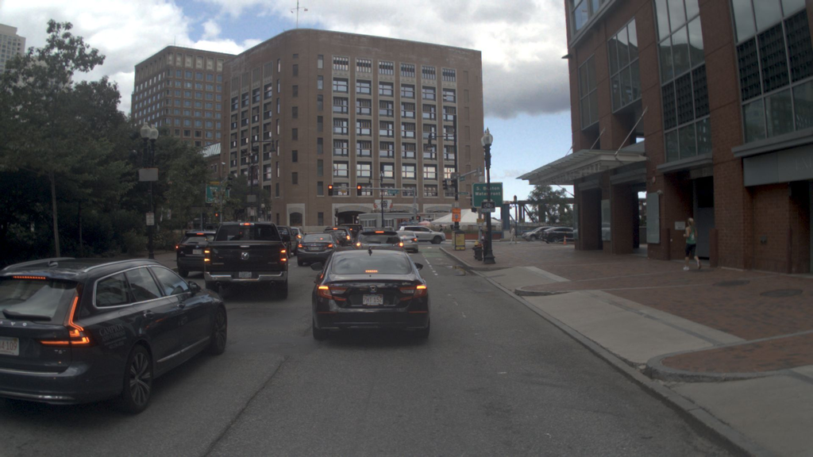
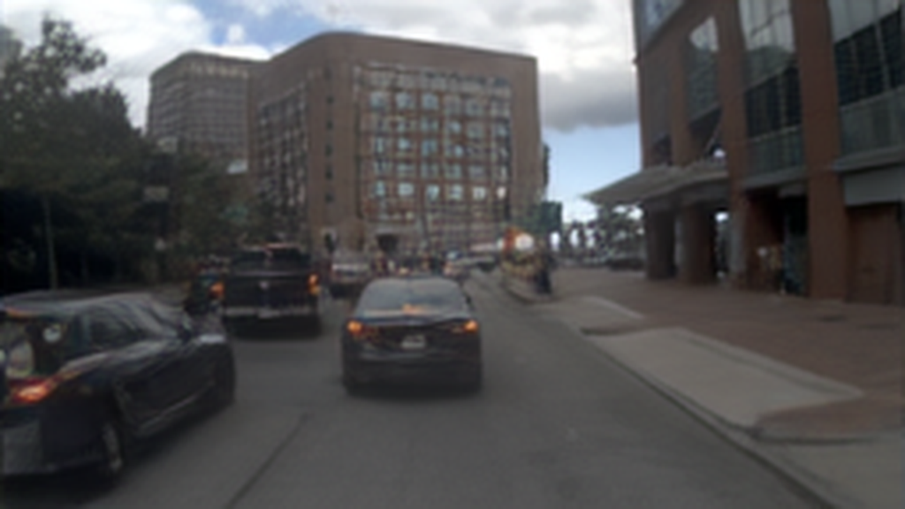
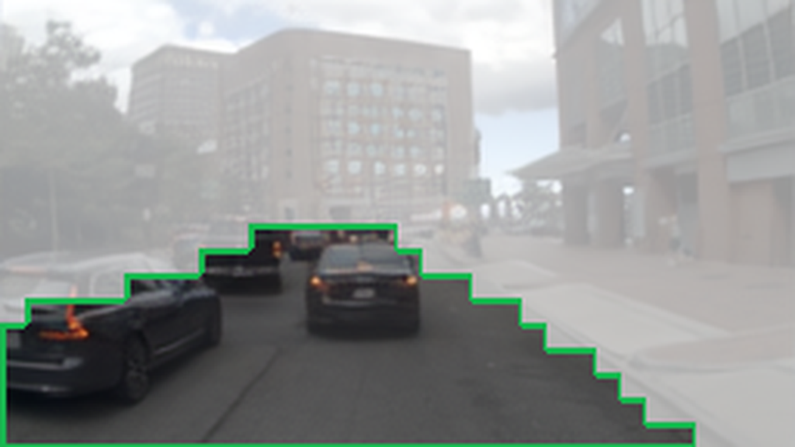
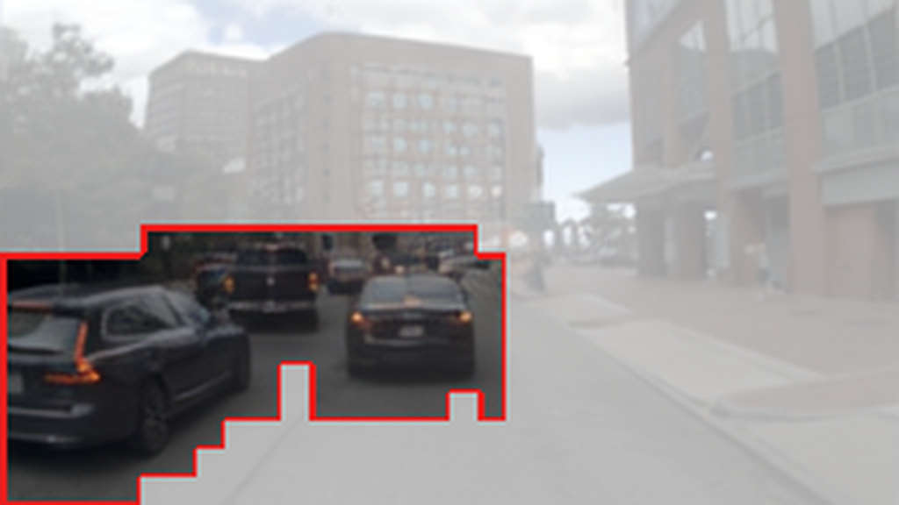
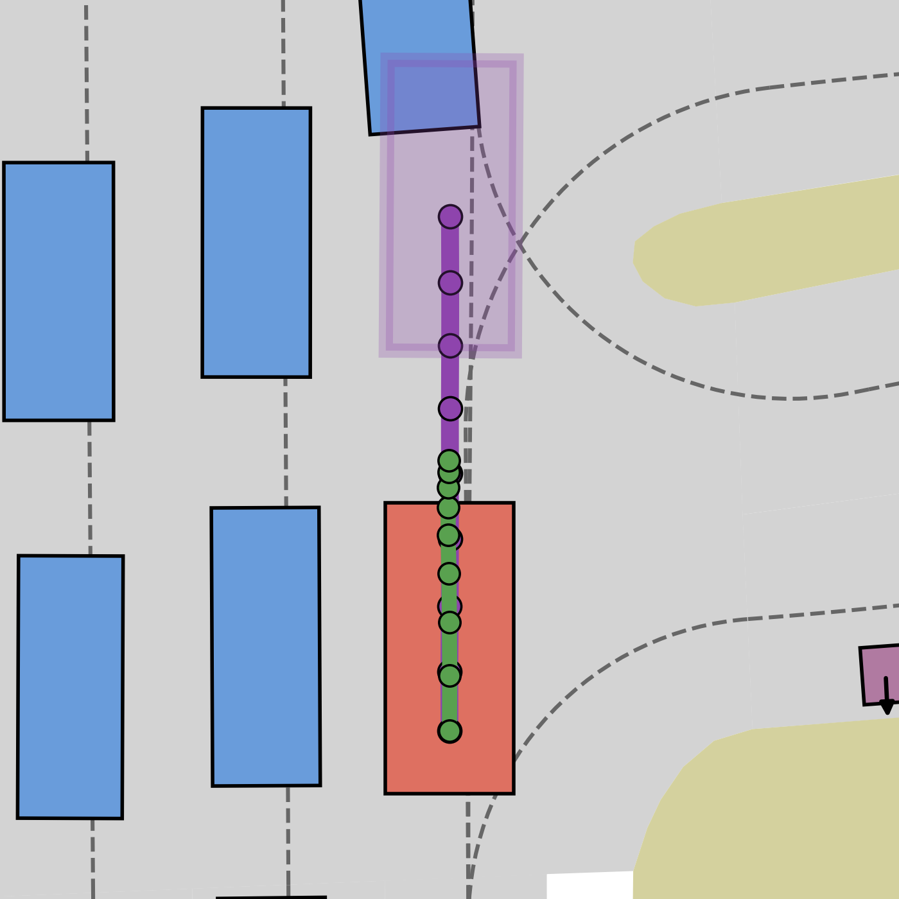
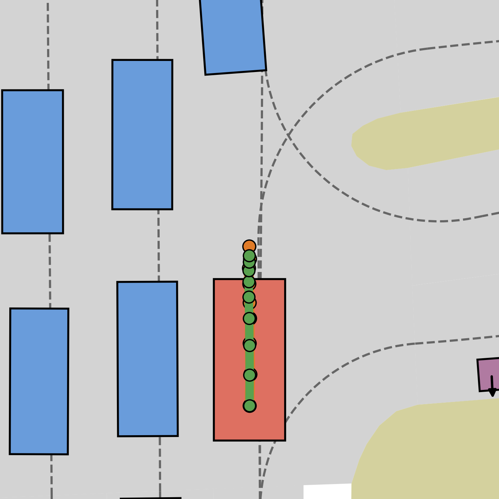

PDMS ↑ higher is better
91.3AffordDrive3D
| Method | World supervision | PDMS |
|---|---|---|
| AffordDrive3D | Aff + RGB + Depth | 91.3 |
| ReCogDrive | — | 90.8 |
| OWMDrive | 3D Occupancy | 90.8 |
| ExploreVLA | RGB + Depth | 90.4 |
| DriveVLA-W0 | RGB | 90.2 |
01 / Overview

Multi-view images, ego state
Navigation: “keep straight”
World predictions



Planning outcomes

Collision PDMS 0.0

Safe trajectory PDMS 100.0
AffordDrive3D predicts future geometry to model evolving spatial structure and driving affordances to identify regions critical to ego motion. Together, these signals make future world modeling explicitly action-relevant for trajectory planning.
02 / Method
A causal VLM processes multi-view images, navigation commands, ego state, and four groups of learnable tokens. Explore each branch to see how it contributes to planning.
What matters for motion
Affordance tokens forecast drivable areas and collision-critical regions across the current and future scene, explicitly modeling how action-relevant space evolves over time.
03 / Results
AffordDrive3D achieves 91.3 PDMS on NAVSIM v1 and 89.9 EPDMS on NAVSIM v2.
| Method | World supervision | PDMS |
|---|---|---|
| AffordDrive3D | Aff + RGB + Depth | 91.3 |
| ReCogDrive | — | 90.8 |
| OWMDrive | 3D Occupancy | 90.8 |
| ExploreVLA | RGB + Depth | 90.4 |
| DriveVLA-W0 | RGB | 90.2 |
| Method | World supervision | EPDMS |
|---|---|---|
| AffordDrive3D | Aff + RGB + Depth | 89.9 |
| ExploreVLA | RGB + Depth | 88.8 |
| DriveDreamer-Policy | RGB + Current Depth | 88.7 |
| DriveSuprim | — | 87.1 |
| DriveVLA-W0 | RGB | 86.1 |
World supervision follows the paper’s “World Sup.” labels. Aff = driving affordances.
04 / Visualizations
AffordDrive3D models action-relevant space in challenging scenarios, including narrow curvy roads and braking vehicles.
Narrow curvy road
AffordDrive3D’s drivable-area forecasts capture the narrow road structure over time, so its trajectory remains near the lane center. The RGB WAM and action-only baselines both go off-road.
Trajectory comparison
Leading vehicle braking
AffordDrive3D’s collision-critical forecasts track the leading vehicle across future horizons, while RGB-consistent depth captures its relative distance and surrounding geometry. AffordDrive3D maintains a safe distance, while both baselines collide.
Trajectory comparison
05 / Citation
If AffordDrive3D supports your research, please cite the arXiv paper.
@misc{cai2026afforddrive3d,
title={AffordDrive3D: Affordance-Aware World-Action
Modeling with Spatial Understanding},
author={Cai, Tianhui and Sun, Xinglong and Fang, Chao
and Li, Zhenxin and Song, Rui and Alvarez, Jose M.
and Mao, Yunxiang and Ma, Jiaqi and Liu, Langechuan},
year={2026},
eprint={2610.11060},
archivePrefix={arXiv},
primaryClass={cs.CV},
url={https://arxiv.org/abs/2610.11060}
}